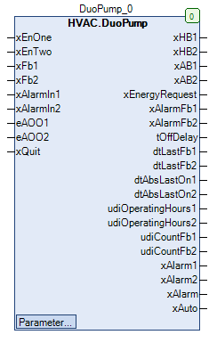

DuoPump (FB)¶
FUNCTION_BLOCK DuoPump
Kurzbeschreibung¶
Redundante Steuerung von zwei gleichartigen Umwälzpumpen mit BlockierschutzfunktionZusatzfunktionen: Anforderung der Energieerzeugung, Handübersteuerungen, Pumpennachlauf, Betriebsstundenzähler, BetriebsüberwachungTypische Anwendung: Redundante Steuerung einer Doppelpumpe in einem Heizkreis
Darstellung¶

Schnittstellen¶
Eingänge¶
Name Datentyp Wertebereich Initialwert Funktion xEnOne BOOL Anforderung der Führungspumpe xEnTwo BOOL Anforderung der Führungs- und Folgepumpe xFb1 BOOL Betriebsmeldung der Umwälzpumpe 1 xFb2 BOOL Betriebsmeldung der Umwälzpumpe 2 xAlarmIn1 BOOL Störmeldung der Umwälzpumpe 1 xAlarmIn2 BOOL Störmeldung der Umwälzpumpe 2 eAOO1 HVACTYPES.eManBin HVACTYPES.eManBin.Auto, HVACTYPES.eManBin.ManOff, HVACTYPES.eManBin.ManOn HVACTYPES.eManBin.Auto Betriebsart der Handübersteuerung - Hardware Umwälzpumpe 1 eAOO2 HVACTYPES.eManBin HVACTYPES.eManBin.Auto, HVACTYPES.eManBin.ManOff, HVACTYPES.eManBin.ManOn HVACTYPES.eManBin.Auto Betriebsart der Handübersteuerung - Hardware Umwälzpumpe 2 xQuit BOOL FALSE Rücksetzung der Störmeldung der Betriebsüberwachungen
Ausgänge¶
Name Datentyp Wertebereich Initialwert Funktion xHB1 BOOL Freigabe - Umwälzpumpe 1 nach Handübersteuerung xHB2 BOOL Freigabe - Umwälzpumpe 2 nach Handübersteuerung xAB1 BOOL Freigabe - Umwälzpumpe 1 vor Handübersteuerung xAB2 BOOL Freigabe - Umwälzpumpe 2 vor Handübersteuerung xEnergyRequest BOOL Anforderung der Energieerzeugung xAlarmFb1 BOOL Störmeldung - Betriebsüberwachung - Umwälzpumpe 1 xAlarmFb2 BOOL Störmeldung - Betriebsüberwachung - Umwälzpumpe 2 tOffDelay TIME Restzeit des Nachlaufs der Umwälzpumpe dtLastFb1 DATE_AND_TIME Datum / Uhrzeit des letzten Betriebs der Umwälzpumpe 1 dtLastFb2 DATE_AND_TIME Datum / Uhrzeit des letzten Betriebs der Umwälzpumpe 2 dtAbsLastOn1 DATE_AND_TIME Datum / Uhrzeit des letzten Blockierschutzbetriebs der Umwälzpumpe 1 dtAbsLastOn2 DATE_AND_TIME Datum / Uhrzeit des letzten Blockierschutzbetriebs der Umwälzpumpe 2 udiOperatingHours1 UDINT Betriebsstunden der Umwälzpumpe 1 udiOperatingHours2 UDINT Betriebsstunden der Umwälzpumpe 2 udiCountFb1 UDINT Anzahl der Einschaltungen der Umwälzpumpe 1 udiCountFb2 UDINT Anzahl der Einschaltungen der Umwälzpumpe 2 xAlarm1 BOOL Sammelstörung - Umwälzpumpe 1 xAlarm2 BOOL Sammelstörung - Umwälzpumpe 2 xAlarm BOOL Sammelstörung xAuto BOOL Sammelmeldung Automatikbetrieb
Sollwerte / Parameter¶
Name Datentyp Wertebereich Initialwert Funktion eManModeB1 eMANBIN eMANBIN.Auto, eMANBIN.ManOff, eMANBIN.ManOn eMANBIN.Auto Betriebsart der Handübersteuerung für die Umwälzpumpe 1 eManModeB2 eMANBIN eMANBIN.Auto, eMANBIN.ManOff, eMANBIN.ManOn eMANBIN.Auto Betriebsart der Handübersteuerung für die Umwälzpumpe 2 udiOffDelay UDINT 0 bis 600s 60s Nachlaufzeitdauer der Umwälzpumpen eOffDelayTimeBase eTime eTime.Second, eTime.Minute, eTime.Hour eTime.Second Skalierung der Nachlaufzeit ( Sekunden / Minuten / Stunden ) eAbsDay eDoW eDoW.Monday bis eDoW.Sunday eDoW.Monday Wochentag des Blockierschutzbetriebs todAbsStartTime TOD 00:00:00 - 23:59:59 Uhr 08:00:00 Uhr Zeitpunkt des Blockierschutzbetriebs tAbsTime UDINT 0 bis 3600s 120s Zeitdauer des Blockierschutzbetriebs xFbControl BOOL TRUE Freigabe der Betriebsüberwachung udiFbControlTime UDINT 0 bis 300s 60s Zeitdauer der Betriebsüberwachung eModeRedundance eOpModeRedundance eOpModeRedundance.Auto, eOpModeRedundance.ForceComponent1, eOpModeRedundance.ForceComponent2 eOpModeRedundance.Auto Modus Redundance
Funktionsbeschreibung¶
Allgemeines¶
Dieser Funktionsbaustein steuert zwei gleichartige Umwälzpumpen in redundanter Betriebsweise.
Die Auswahl der Anzahl der benötigten Umwälzpumpen erfolgt über die Eingänge xEnOne und xEnTwo
Die Freigaben der Umwälzpumpen 1 und 2 erfolgt über die Ausgänge xHB1 und xHB2 bzw. xAB1 und xAB2.
Es kommen im Wesentlichen folgende Funktionsbausteine zur Anwendung:
Voraussetzung für den Einsatz des Funktionsbausteins DuoPump
Zur korrekten Funktion ist der Einsatz des Funktionsbausteins TimeRead mit xEn = TRUE erforderlich.
Redundante Steuerung¶
Sie dient zur redundanten Steuerung der beiden Umwälzpumpen in Abhängigkeit von den Einflußgrößen Anforderungen ( xEnOne und xEnTwo ),
Betriebstunden ( uxiOperatingHours1 und uxiOperatingHours2 ), Betriebszuständen ( xFb1 und xFb2 ), Störzuständen ( xAlarm1 und xAlarm2 )
und der Betriebsart für die Sequenzfestlegung ( eModeRedundance ).
Die Freigabe der Führungs- und bei Bedarf der Folgegpumpe wird intern festgelegt und unter Berücksichtigung der aktuellen Folge auf die internen
Ausgänge xCmd1 bzw. xCmd2 übertragen.
Die Führungspumpe ist angefordert, wenn sie durch den Eingang xEnOne angefordert ist und / oder während die Pumpennachlaufzeit aktiv ist.
Die Führungs- und die Folgepumpe sind angefordert, wenn sie durch den Eingang xEnTwo angefordert sind.
Anforderungen am Eingang xEnTwo haben Vorrang vor Anforderungen am Eingang xEnOne.
Die Auswahl der Führungs- bzw. Folgepumpe erfolgt mit hoher Priorität über die Zustände der Störmeldungen der Umwälzpumpen
xAlarm1 bzw. xAlarm2 ( Störung = TRUE ).
Die Auswahl der Führungs- bzw. Folgepumpe erfolgt mit niedriger Priorität über den Parameter eModeRedundance.
Bei eModeRedundance = Auto erfolgt die Auswahl über die aktuelle Anzahl an Betriebsstunden der Umwälzpumpen.
Die Zeitdifferenz für die Umschaltung über die Betriebsstunden beträgt 100 Stunden. Die Umschaltung erfolgt nach
unterschiedlichen Kriterien, die im FB Redundance2 detailiert beschrieben sind.
Die Optionen xConOperatingHours sowie xEnFb sind aktiviert ( = TRUE ).
Im Fall eModeRedundance = ForceComponent1 oder eModeRedundance = ForceComponent2 ist entsprechend Umwälzpumpe 1 oder Umwälzpumpe 2 die Führungspumpe.
Freigabe - Umwälzpumpe 1 vor Handübersteuerung xAB1¶
Der Ausgang xAB1 wird durch die redundante Steuerung, den Ausgang xAlarm1,
das Nachlaufmodul und das Blockierschutzmodul beeinflusst.
Redundante Steuerung xAlarm1 Nachlaufmodul Blockierschutzmodul xAB1 Hinweise X TRUE X X FALSE Abschaltung über Sammelstörung freigegeben FALSE X FALSE FALSE FALSE Sperrung über redundante Steuerung TRUE X FALSE FALSE TRUE Freigabe über redundante Steuerung X X TRUE X TRUE Nachlaufbetrieb X X X TRUE TRUE Blockierschutzbetrieb
Legende: X = beliebig
Freigabe - Umwälzpumpe 2 vor Handübersteuerung xAB2¶
Der Ausgang xAB2 durch die redundante Steuerung, den Ausgang xAlarm2,
das Nachlaufmodul und das Blockierschutzmodul beeinflusst.
Redundante Steuerung xAlarm2 Nachlaufmodul Blockierschutzmodul xAB2 Hinweise X TRUE X X FALSE Abschaltung über Sammelstörung freigegeben FALSE X FALSE FALSE FALSE Sperrung über redundante Steuerung TRUE X FALSE FALSE TRUE Freigabe über redundante Steuerung X X TRUE X TRUE Nachlaufbetrieb X X X TRUE TRUE Blockierschutzbetrieb
Legende: X = beliebig
Freigabe - Umwälzpumpe 1 nach Handübersteuerung xHB1¶
Freigabe - Umwälzpumpe 1 nach Handübersteuerung xHB1 entspricht der Freigabe - Umwälzpumpe 1 vor Handübersteuerung xAB1,
zusätzlich erweitert um ein Handübersteuermodul.
xAB1 eMANBIN xHB1 Hinweise FALSE eMANBIN.Auto FALSE Handübersteuermodul in Automatik TRUE eMANBIN.Auto TRUE Handübersteuermodul in Automatik X eMANBIN.ManOn TRUE Handübersteuermodul in Handbetrieb Ein X eMANBIN.ManOff FALSE Handübersteuermodul in Handbetrieb Aus
Legende: X = beliebig
Freigabe - Umwälzpumpe 2 nach Handübersteuerung xHB2¶
Freigabe - Umwälzpumpe 2 nach Handübersteuerung xHB2 entspricht der Freigabe - Umwälzpumpe 2 vor Handübersteuerung xAB2,
zusätzlich erweitert um ein Handübersteuermodul.
xAB2 eMANBIN xHB2 Hinweise FALSE eMANBIN.Auto FALSE Handübersteuermodul in Automatik TRUE eMANBIN.Auto TRUE Handübersteuermodul in Automatik X eMANBIN.ManOn TRUE Handübersteuermodul in Handbetrieb Ein X eMANBIN.ManOff FALSE Handübersteuermodul in Handbetrieb Aus
Legende: X = beliebig
Betriebsmeldungen xFb1 und xFb2¶
Umwälzpumpe 1 in Betrieb: xFb1 = TRUE
Umwälzpumpe 1 nicht in Betrieb: xFb1 = FALSE
Umwälzpumpe 2 in Betrieb: xFb2 = TRUE
Umwälzpumpe 2 nicht in Betrieb: xFb2 = FALSE
Störmeldungen xAlarmIn1 und xAlarmIn2¶
Umwälzpumpe 1 gestört: xAlarmIn1 = TRUE
Umwälzpumpe 1 nicht gestört: xAlarmIn1 = FALSE
Umwälzpumpe 2 gestört: xAlarmIn2 = TRUE
Umwälzpumpe 2 nicht gestört: xAlarmIn2 = FALSE
Rücksetzung der Störmeldung der Betriebsüberwachungen xQuit¶
Die Rücksetzung der Störmeldung der Betriebsüberwachungen xAlarmFb1 und xAlarmFb2 erfolgt, solange die
Rücksetzung der Störmeldung der Betriebsüberwachungen xQuit aktiv ( = TRUE ) ist.
Anforderung - Energieerzeugung xEnergyRequest¶
Die Anforderung - Energieerzeugung xEnergyRequest wird durch die Blockierschutzmodule. die Nachlaufmodule
und die Betriebsrückmeldungen der Umwälzpumpen 1 und 2 xFb1 und xFb2 beeinflusst.
Die Anforderung - Energieerzeugung xEnergyRequest ist aktiv, wenn
von der Umwälzpumpe 1 die Betriebsmeldung xFb1 anliegt und gleichzeitig das Blockierschutzmodul 1 nicht aktiv sind
und / oder
von der Umwälzpumpe 2 die Betriebsmeldung xFb2 anliegt und gleichzeitig das Blockierschutzmodul 2 nicht aktiv sind
und
das Nachlaufmodul nicht aktiv ist
Nachlaufmodul¶
Das Nachlaufmodul wird durch eine Abschaltverzögerung mit einstellbarer Zeitdauer udiOffDelay realisiert. Das Nachlaufmodul
wird aktiviert, falls keine Anforderung über die Eingänge xEnOne bzw. xEnTwo mehr vorliegt.
Der Pumpennachlauf findet nur an der Führungspumpe statt.
Blockierschutzmodule¶
Die Blockierschutzmodule werden durch das binäre Blockierschutzmodul mit einstellbarer Zeitdauer realisiert.
Die Zeitdauer tAbsTime, der Zeitpunkt tAbsStartTime und der Wochentag eAbsDay sind für die erste Pumpe einstellbar.
Der Zeitpunkt für die zweite Pumpe ist der Zeitpunkt der ersten Pumpe versetzt um zweimal die Zeitdauer der ersten Pumpe tAbsTime.
Der Zeitstempel (Datum / Uhrzeit) des letzten Blockierschutzbetriebs steht, getrennt für jede Umwälzpumpe
an den Ausgängen dtAbsLastOn1 bzw. dtAbsLastOn2 zur Verfügung.
Sammelstörung - Umwälzpumpe 1 xAlarm1¶
Die Sammelstörung - Umwälzpumpe 1 xAlarm1 ist aktiv ( = TRUE ), falls die Störmeldung der Umwälzpumpe 1 xAlarmIn1 aktiv
ist ( = TRUE ) und / oder eine Störmeldung - Betriebsüberwachung - Umwälzpumpe 1 xAlarmFb1 ( = TRUE ) vorliegt.
In allen übrigen Situationen ist die Sammelstörung - Umwälzpumpe 1 xAlarm1 nicht aktiv ( = FALSE ).
Sammelstörung - Umwälzpumpe 2 xAlarm2¶
Die Sammelstörung - Umwälzpumpe 2 xAlarm2 ist aktiv ( = TRUE ), falls die Störmeldung der Umwälzpumpe 2 xAlarmIn2 aktiv
ist ( = TRUE ) und / oder eine Störmeldung - Betriebsüberwachung - Umwälzpumpe 2 xAlarmFb2 ( = TRUE ) vorliegt.
In allen übrigen Situationen ist die Sammelstörung - Umwälzpumpe 2 xAlarm2 nicht aktiv ( = FALSE ).
Sammelstörung xAlarm¶
Die Sammelstörung xAlarm ist aktiv ( = TRUE ), falls die Sammelstörung - Umwälzpumpe 1 xAlarm1 aktiv ist oder die
Sammelstörung - Umwälzpumpe 2 xAlarm2 aktiv ist.
In allen übrigen Situationen ist die Sammelstörung xAlarm nicht aktiv ( = FALSE ).
Betriebsstundenzähler - Umwälzpumpe 1¶
Der Betriebsstundenzähler für die Umwälzpumpe 1 ist aktiv, wenn die Betriebsmeldung xFb1 = TRUE und gleichzeitig
die Sammelstörung xAlarm1 = FALSE ist.
Betriebsstundenzähler - Umwälzpumpe 2¶
Der Betriebsstundenzähler für die Umwälzpumpe 2 ist aktiv, wenn die Betriebsmeldung xFb2 = TRUE und gleichzeitig
die Sammelstörung xAlarm2 = FALSE ist.
Schreibzugriff auf die Zählerstände
Über den Pfad ‘Instanzname._OperatingHours[1].udiOperatingHours’ bzw. ‘Instanzname._OperatingHours[1].udiCountFb’ ist ein Schreibzugriff auf die beide Zählerstände möglich.
Über den Pfad ‘Instanzname._OperatingHours[2].udiOperatingHours’ bzw. ‘Instanzname._OperatingHours[2].udiCountFb’ ist ein Schreibzugriff auf die beide Zählerstände möglich.
Betriebsüberwachung - Umwälzpumpe 1¶
Die Betriebsüberwachung überwacht die korrekte Funktion der Umwälzpumpe 1.
Die Überwachung kann generell freigegeben (xFbControl = TRUE) oder gesperrt (xFbControl = FALSE) werden.
Die Betriebsart der Handübersteuerung - Hardware Umwälzpumpe 1 muß sich im Automatikbetrieb befinden ( eAOO1 = HVACTYPES.eManBin.Auto ).
Die Störmeldung - Betriebsüberwachung - Umwälzpumpe 1 xAlarmFb1 wird aktiviert ( = TRUE ), falls während der Zeitdauer der
Betriebsüberwachung udiFbControlTime die Zustände des Eingängs xFb1 und des Ausgangs xHb1 ungleich sind.
Die Störmeldung - Betriebsüberwachung - Umwälzpumpe 1 xAlarmFb1 wird deaktiviert ( = FALSE ), falls mindestens eine
der nachfolgenden Bedingungen aktiv ist:
eAOO1 = HVACTYPES.eManBin.Auto ( Umschaltung in den Automatikbetrieb der Handübersteuerung - Hardware ).
Rücksetzung der Störmeldung der Betriebsüberwachungen xQuit = TRUE
Freigabe der Betriebsüberwachung xFbControl = FALSE
Betriebsüberwachung - Umwälzpumpe 2¶
Die Betriebsüberwachung überwacht die korrekte Funktion der Umwälzpumpe 2.
Die Überwachung kann generell freigegeben (xFbControl = TRUE) oder gesperrt (xFbControl = FALSE) werden.
Die Betriebsart der Handübersteuerung - Hardware Umwälzpumpe 2 muß sich im Automatikbetrieb befinden ( eAOO2 = HVACTYPES.eManBin.Auto ).
Die Störmeldung - Betriebsüberwachung - Umwälzpumpe 2 xAlarmFb2 wird aktiviert ( = TRUE ), falls während der Zeitdauer der
Betriebsüberwachung udiFbControlTime die Zustände des Eingängs xFb2 und des Ausgangs xHb2 ungleich sind.
Die Störmeldung - Betriebsüberwachung - Umwälzpumpe 2 xAlarmFb2 wird deaktiviert ( = FALSE ), falls mindestens eine
der nachfolgenden Bedingungen aktiv ist:
eAOO2 = HVACTYPES.eManBin.Auto ( Umschaltung in den Automatikbetrieb der Handübersteuerung - Hardware ).
Rücksetzung der Störmeldung der Betriebsüberwachungen xQuit = TRUE
Freigabe der Betriebsüberwachung xFbControl = FALSE
Sammelmeldung Automatikbetrieb xAuto¶
Die Sammelmeldung Automatikbetrieb xAuto wird aktiviert ( = TRUE ), falls folgende Bedingungen gleichzeitig erfüllt sind:
- Eingang eAOO1 = HVACTYPES.eManBin.Auto
- Eingang eAOO2 = HVACTYPES.eManBin.Auto
- Sollwert / Parameter eManModeB1 = eMANBIN.Auto
- Sollwert / Parameter eManModeB2 = eMANBIN.Auto
Visualisierung¶
Codesys¶
- InOut:
Scope Name Type Initial Comment Input xEnOne BOOL Anforderung der Führungspumpe xEnTwo BOOL Anforderung der Führungs- und Folgepumpe xFb1 BOOL Betriebsmeldung der Umwälzpumpe 1 xFb2 BOOL Betriebsmeldung der Umwälzpumpe 2 xAlarmIn1 BOOL Störmeldung der Umwälzpumpe 1 xAlarmIn2 BOOL Störmeldung der Umwälzpumpe 2 eAOO1 eManBin HVACTYPES.eManBin.Auto Betriebsart der Handübersteuerung - Hardware Umwälzpumpe 1 eAOO2 eManBin HVACTYPES.eManBin.Auto Betriebsart der Handübersteuerung - Hardware Umwälzpumpe 2 xQuit BOOL FALSE Rücksetzung der Störmeldung der Betriebsüberwachungen Output xHB1 BOOL Freigabe - Umwälzpumpe 1 nach Handübersteuerung xHB2 BOOL Freigabe - Umwälzpumpe 2 nach Handübersteuerung xAB1 BOOL Freigabe - Umwälzpumpe 1 vor Handübersteuerung xAB2 BOOL Freigabe - Umwälzpumpe 2 vor Handübersteuerung xEnergyRequest BOOL Anforderung der Energieerzeugung xAlarmFb1 BOOL Störmeldung - Betriebsüberwachung - Umwälzpumpe 1 xAlarmFb2 BOOL Störmeldung - Betriebsüberwachung - Umwälzpumpe 2 tOffDelay TIME Restzeit des Nachlaufs der Umwälzpumpe dtLastFb1 DT Datum / Uhrzeit des letzten Betriebs der Umwälzpumpe 1 dtLastFb2 DT Datum / Uhrzeit des letzten Betriebs der Umwälzpumpe 2 dtAbsLastOn1 DT Datum / Uhrzeit des letzten Blockierschutzbetriebs der Umwälzpumpe 1 dtAbsLastOn2 DT Datum / Uhrzeit des letzten Blockierschutzbetriebs der Umwälzpumpe 2 udiOperatingHours1 UDINT Betriebsstunden der Umwälzpumpe 1 udiOperatingHours2 UDINT Betriebsstunden der Umwälzpumpe 2 udiCountFb1 UDINT Anzahl der Einschaltungen der Umwälzpumpe 1 udiCountFb2 UDINT Anzahl der Einschaltungen der Umwälzpumpe 2 xAlarm1 BOOL Sammelstörung - Umwälzpumpe 1 xAlarm2 BOOL Sammelstörung - Umwälzpumpe 2 xAlarm BOOL Sammelstörung xAuto BOOL Sammelmeldung Automatikbetrieb Input eModeRedundance eOpModeRedundance eOpModeRedundance.Auto Redundance Modus udiFbControlTime UDINT 60 Zeitdauer der Betriebsüberwachung xFbControl BOOL TRUE Freigabe der Betriebsüberwachung tAbsTime UDINT 120 Zeitdauer des Blockierschutzbetriebs todAbsStartTime TOD TIME_OF_DAY#8:0 Zeitpunkt des Blockierschutzbetriebs eAbsDay eDoW eDow.Monday Wochentag des Blockierschutzbetriebs eOffDelayTimeBase eTime eTime.Second Skalierung der Nachlaufzeit ( Sekunden / Minuten / Stunden ) udiOffDelay UDINT 60 Nachlaufzeitdauer der Umwälzpumpe eManModeB2 eMANBIN eMANBIN.Auto Betriebsart der Handübersteuerung für die Umwälzpumpe 2 eManModeB1 eMANBIN eMANBIN.Auto Betriebsart der Handübersteuerung für die Umwälzpumpe 1